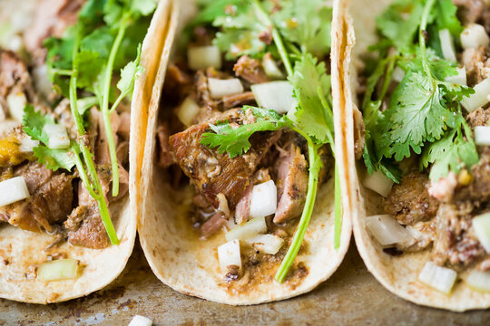

Tacos de Carnitas
Ingrediences
- 2 tablespoons vegetable shortening
- 3 ½ pounds boneless pork shoulder, cut into 5-inch chunks (do not remove fat)
- ½ onion, roughly chopped
- 8 cloves garlic, peeled
- 2 chipotle peppers
- 1 teaspoon thyme
- 1 teaspoon dried oregano, preferably Mexican
- 1/8 teaspoon ground cumin
- 1/8 teaspoon ground cinnamon
- 1 tablespoon coarse salt
- 1 teaspoon ground black pepper
- 5 whole cloves
- 2 tablespoons sweetened condensed milk
- 1 orange, juiced
Method
In a large skillet or stock pot heat vegetable shortening on high heat
and place pieces of pork and brown meat.
Place in a blender onion, garlic, water, chile peppers, thyme, oregano, cumin,
cinnamon, salt, pepper, and cloves. Blend until well blended.
Turn the meat over and brown second side. Once meat is browned on both sides,
pour in braising mixture over the pork.
Add condensed milk over the pork and fresh orange juice.
Reduce the heat to medium-low, cover, and cook for 1 hour.
Once cooked, shred pork or chop into bite-sized pieces.
Heat corn tortillas on a griddle. Fill with the carnitas and serve with salsa,
crema Mexican, and a squeeze of lime juice.